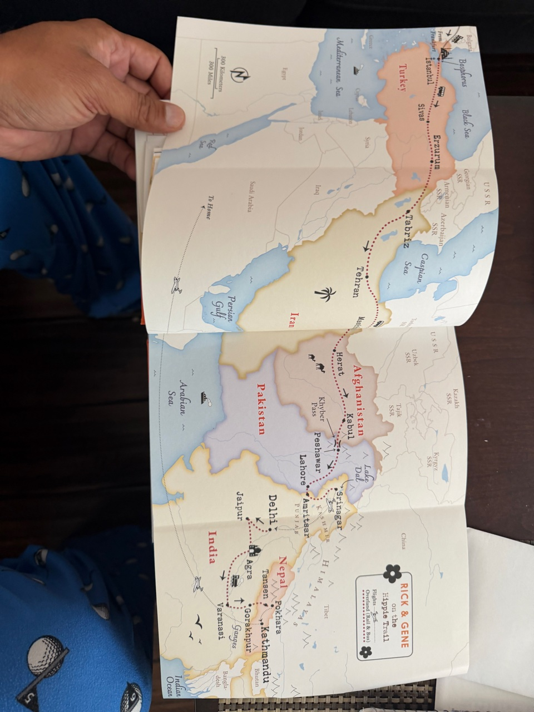
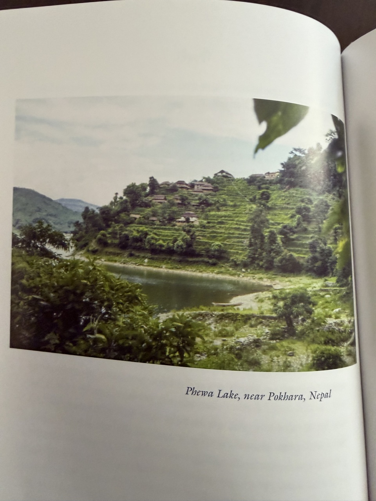
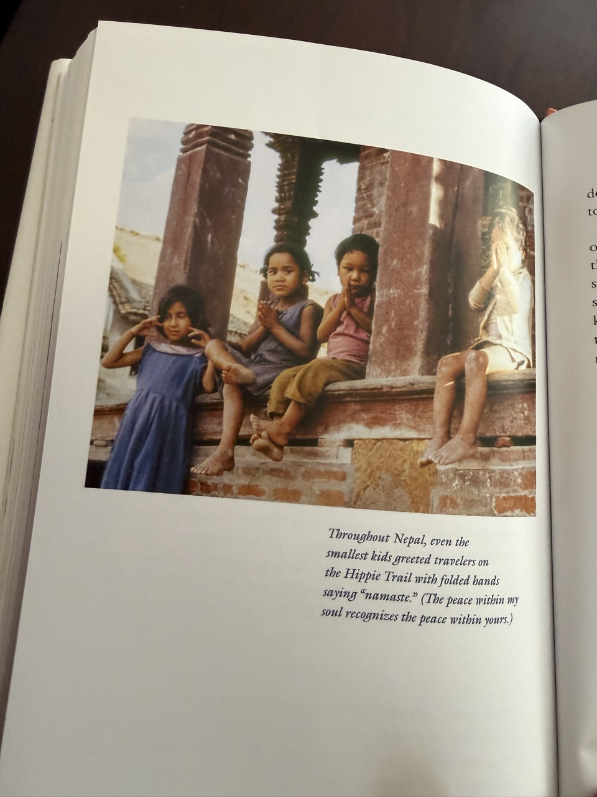
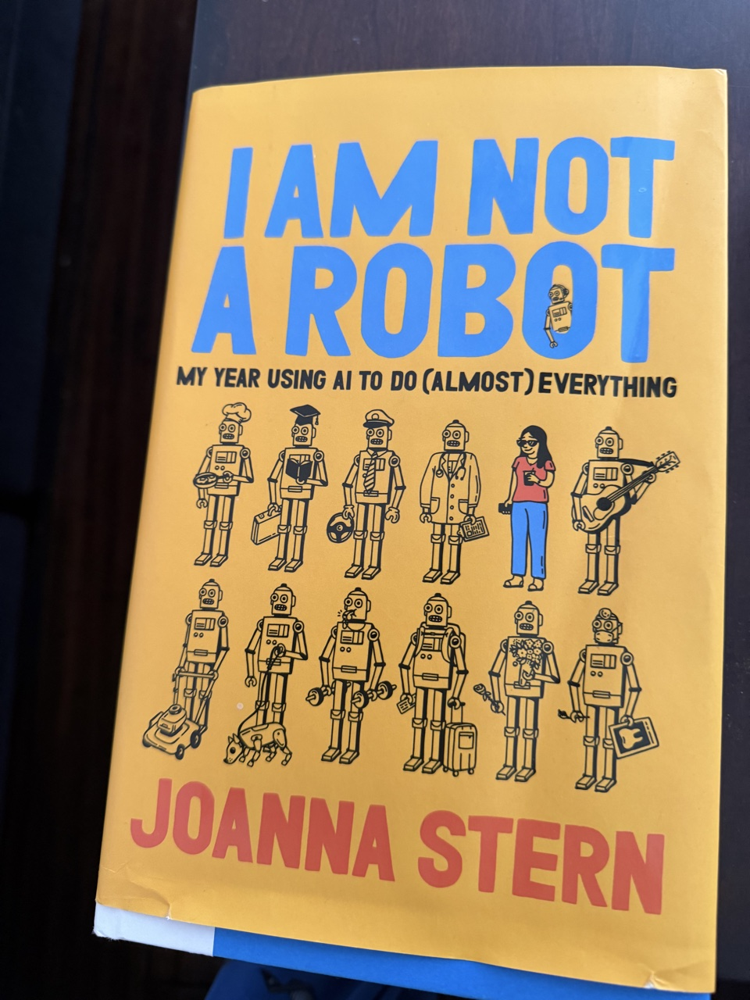

Two books this year, completely different. One is about modern science and engineering; this one is pure travel joy — how a 23-year-old got from Europe to Nepal in the 1970s.
Rick Steves wrote this book 45 years after the trip. In the summer of 1978 — the year before I was born — he and his friend Gene set out from Helsinki heading east, overland, all the way to Nepal. The route ran through Yugoslavia, Bulgaria, Turkey, Iran, Afghanistan, Pakistan, India, and finally Nepal. The journal he kept daily on the road became this book: 60,000 words that changed the trajectory of his life.
The details are what make it. Lamb’s head for dinner in Bulgaria. Rugby with locals in eastern Turkey. A bus to Tehran in the days of the last Shah. Crossing the Khyber Pass into Afghanistan, where the vehicles were still horse-drawn and a hotel room cost five dollars. The tangle of Lahore — hot, muggy, overwhelming. Amritsar, the holy center of the Sikh religion. Srinagar, in the wettest monsoon in 70 years. The Taj Mahal. Varanasi. And glucose biscuits — a small detail that stopped me cold, because I loved them when I was young.


And then Nepal. “I am so glad to be in Nepal,” he wrote. Butwal. Tansen’s Hotel Shiddhartha. Pokhara — a five-dollar corner room by the lake, pedaling on Phewa Lake. Kathmandu: chicken curry and momos, a candlelit dinner, the living goddess Kumari, the 2,500-year-old Swayambhu with its monkeys, apple pie and milky tea while listening to Bob Dylan. He noticed what I have always known about Nepali women — “unlike my impression of Indian women, she was more independent and in control enough to look me right in the eye.”
The photo that stopped me: small kids across Nepal greeting travelers with folded hands — “namaste.” The peace within my soul recognizes the peace within yours. That is the whole book in one image.
The Postscript is the thesis: travel is more than bucket lists and selfies. Travelers understand that the big challenges of the future will be blind to borders, and we will need to tackle them together — as global citizens. Build bridges, not walls. After the trip, he let his piano students go, turned his recital hall into a lecture hall, and started a small travel business. The rest is history.
We gain understanding of people, culture, and nature by travel.
1978 was the last summer of the Hippie Trail — the Soviet invasion of Afghanistan and the Iranian revolution closed it the next year. Nobody can take that exact trip again. But his point stands: anyone can still get their fingers dirty in other cultures, wallop their ethnocentrism, and come home with the most valuable souvenir — a broader perspective. Keep on travelin’.

The subtitle is the whole premise. Joanna Stern, the Wall Street Journal’s personal tech columnist, spent a year routing her entire life through AI — Claude and the rest. Then she wrote down what actually happened.
The honest parts are the best. She describes replacing Google with AI answers: “it felt strange to stop googling things — a bit like walking down a paused escalator. But it quickly became second nature to just get ‘answers’ instead of a list of blue links.” Her data-collection log is delightful: kids’ questions (“Can turtles fart?” — they pass gas through their cloaca), a meatball recipe with ketchup as the secret ingredient, what temperature the kids’ rooms should be (70°F — “we own sweatshirts, we own socks”), how often to rotate tires, companies working on AI and radiology, the cheapest day to fly to Chicago (Tuesdays), how to get dog scratches out of a leather couch.
But the book is more than a diary of prompts. She traces AI back to John McCarthy at Dartmouth, who coined the term, and makes the case for the democratization of AI — that ordinary people, not just engineers, should wield it. Her sharpest line, and the one I underlined: it is human verification and validation that give birth to AI rules. The machine proposes; the human disposes. Even her skeptical colleagues came around.
She is clear-eyed about where the technology is going — which industries are moving in what direction, from autonomous cars to music to retail — and the book works as a field guide to AI applications and how they will reshape daily life.
Why did this book land so hard for me? Because I have been running the same experiment. I use Muse, my AI agent, every single day: buying airplane tickets, ordering from Home Depot, managing more than ten websites. I was not a fan of AI agents before. Now I plan my days around one. Stern’s year of AI is my life with Everest — and her conclusion matches mine: the technology is genuinely useful, the hype is survivable, and the human stays in charge.
A fun, fast, honest book. If you are AI-curious but AI-skeptical, start here.